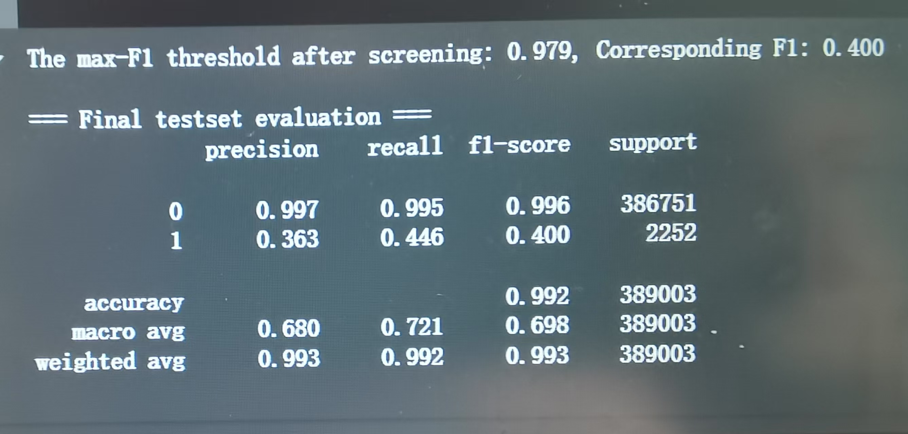
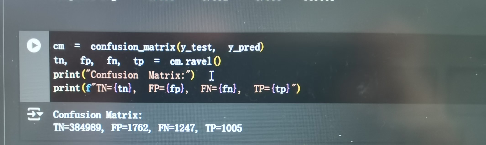
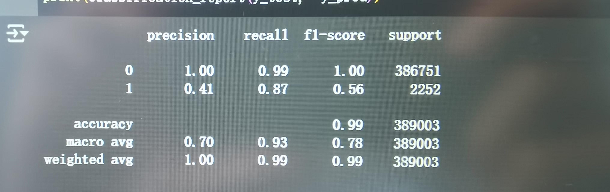
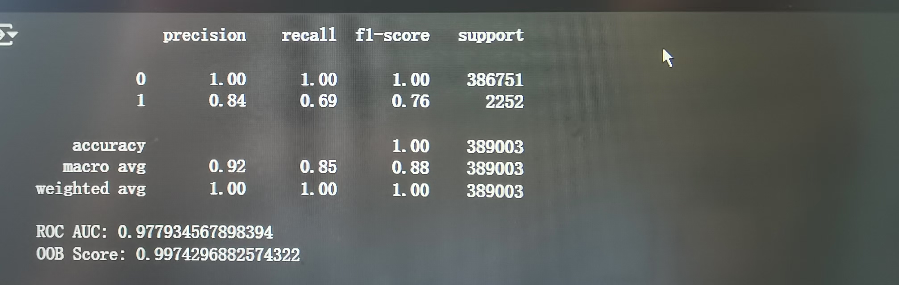
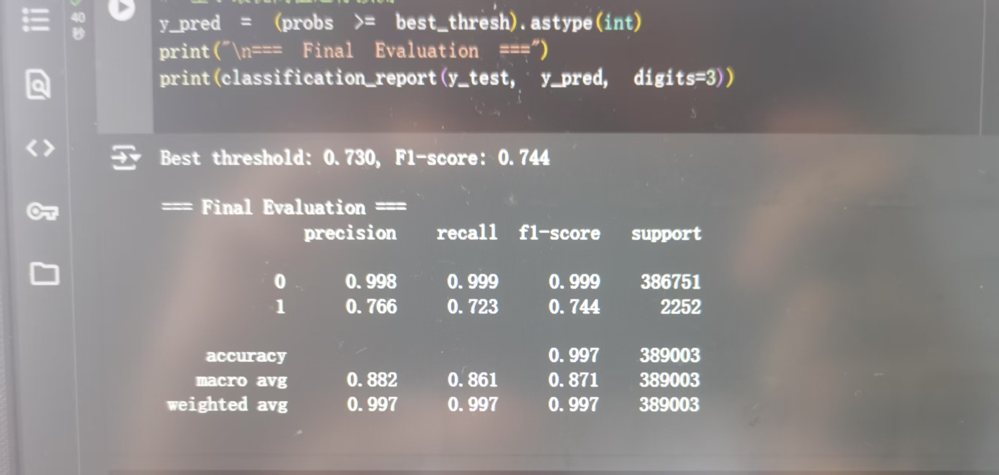
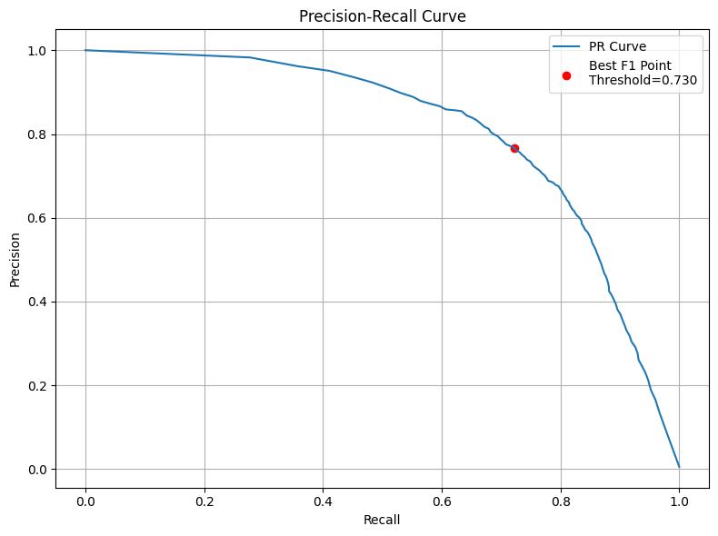
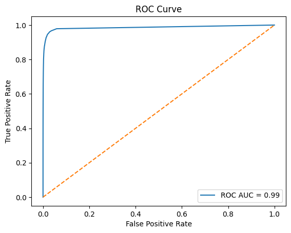
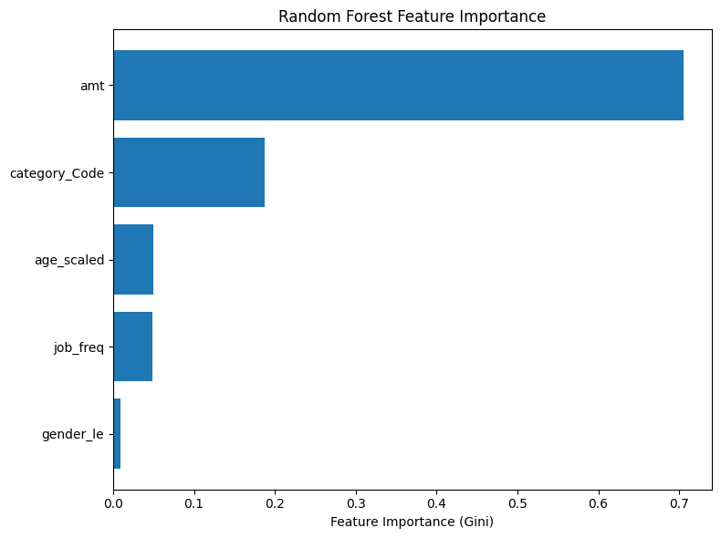
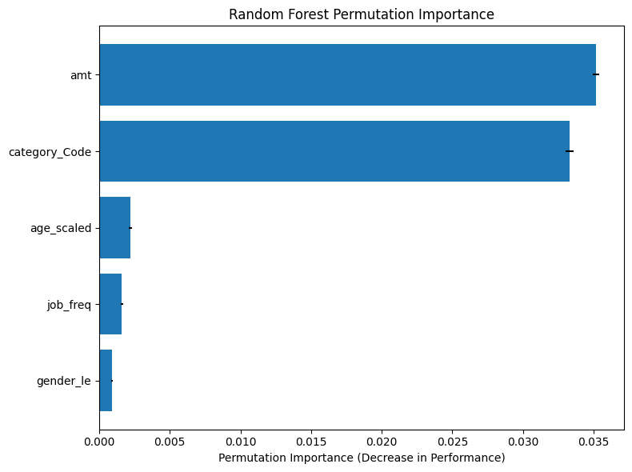
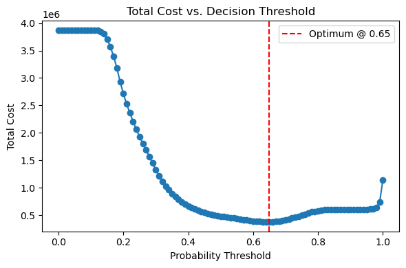

.png)
.png)
.png)
.png)
🤖 Model Building & Testing
1️⃣ Logistic Regression
- Used all remaining variables to train the model, but the classification report performance was unsatisfactory.

- Assessed feature importance by examining the magnitudes of the model’s coefficients.
- Tried optimizing the model by combining Precision–Recall curve threshold selection with over- and under-sampling. 
Confidence Interval of Coefficients
Baseline Fraud Risk (~1.8 %)
This is the model’s “starting point” probability of fraud when all input factors (amount, category, gender, job frequency, age) are at their reference level (i.e. zero on the scaled/encoded scale). Converting the intercept (–3.99) into a probability gives about 1.8 %, meaning that without any other information, the model would guess just under a 2 % chance of fraud.
Confidence Intervals (CIs)
A 95 % confidence interval is a range around each coefficient that shows how precise that estimate is. If the range doesn’t cross zero, we’re reasonably sure (95 % confident) that the real effect isn’t just random noise. In my results, all intervals stayed either entirely above or entirely below zero, so each factor has a real impact on fraud risk.
Key Feature Effects
- Transaction Amount (amt): Higher amounts increase fraud risk. Every one-unit jump in your scaled amount raises the odds of fraud by about 58 %.
- Merchant Category (category_Code): Some categories are slightly safer. Moving up one code reduces fraud odds by about 15 %.
- Gender (gender_le): Depending on how you coded it, going from 0→1 increases fraud odds by roughly 23 %.
- Job Frequency (job_freq): This feature nearly guarantees non-fraud in your data—higher values push fraud probability toward zero.
- Age (age_scaled): Older customers have a slightly higher fraud risk, with each unit of scaled age adding about 16 % to the odds.
📊 Key Takeaways
Reading Materials:What Is an ROC Curve and AUC?
An ROC curve (receiver operating characteristic curve) measures a classifier’s performance by plotting the true positive rate against the false positive rate at various thresholds. AUC (area under the ROC curve) represents the probability that the classifier will rank a randomly chosen positive instance higher than a randomly chosen negative one.
Why Choose the ROC Curve?
AUC is threshold-invariant (the metric’s value does not depend on a particular decision threshold) and scale-invariant (the metric evaluates ranking quality rather than absolute score values).
Trade-off Between TPR and FPR
If your goal is to identify as many true positives as possible, you pursue a high TPR, which may come at the cost of a higher FPR—meaning false positives become more frequent. And vice versa.
Personal Insights
- TPR indicates the proportion of actual positives that the model correctly predicts as positive. FPR indicates the proportion of actual negatives that the model incorrectly predicts as positive.
- Precision: Of all samples predicted positive (TP + FP), what fraction are truly positive (TP).
- Recall: Of all actual positive samples (TP + FN), what fraction did the model correctly predict as positive (TP).
🔑 Evaluating the Logistic Regression Model: Confusion Matrix, ROC & AUC, and PR Curve
Confusion Matrix
ROC Curve

Key takeaway:The curve is moderately close to the top-left corner.This suggests the model is pretty good at distinguishing fraud, but there’s room for improvement.True Positive Rate (TPR) starts high but flattens early, indicating some trade-off with increasing False Positive Rate (FPR).
PR Curve

Key takeaway: An Average Precision of 0.19 means that—even though you can rank frauds relatively well—the model’s practical precision is low: when it flags a transaction as fraud, it’s correct only 19% of the time on average.
📝 Comment
Although the model achieves strong overall discriminative power (ROC-AUC = 0.84), precision on the minority class remains low (AP = 0.19), so logistic regression is not an effective tool to predict credit card fraud.
2️⃣ Random Forest
- Using the Random Forest with only class_weight='balanced', the model achieved a precision of 0.84 and a recall of 0.69. This configuration prioritized reducing false negatives, only correctly flagging 69% of fraudulent transactions while maintaining a high level of precision. 
- Next, I applied both SMOTE (oversampling the minority class at a 0.5 ratio) and random undersampling of the majority class. While this boosted recall to 0.87—meaning the vast majority of fraud cases were detected—it came at the cost of precision dropping to 0.41. In practical terms, many non-fraudulent transactions were now being misclassified as fraud. 
- Finally, I tried to remove undersampling and reduce the SMOTE ratio from 0.5 to 0.1. I then used the Precision–Recall curve to identify the optimal decision threshold for maximizing the F1 score. With this tuned setup, the model struck a better balance, yielding a precision of 0.766 and a recall of 0.723. 
📊 Evaluating the Random forest Model: ROC & AUC and PR Curve,
PR Curve
Key takeaway: At very low recall , we can get near-perfect precision, but beyond ~0.7 recall precision dips below 0.8. The red dot marks the threshold (≈0.73) that maximizes F₁, giving us about precision ≈ 0.77 and recall ≈ 0.73. Thus, we can strike a balance—catch roughly 73% of frauds while still being right about 77% of the time.
ROC Curve
Key takeaway: The curve almost hugs the top-left corner, which is ideal.This model can almost perfectly rank fraud vs. non-fraud.Near-perfect AUC means high detection with very low false alarms.
📊 Feature Importance
1️⃣ Gini-based Importance
2️⃣ Permutation-based Importance
Note: Both the Gini‐based and permutation‐based importance rankings confirm that transaction amount and category are by far the most influential predictors in Random Forest Model, with the other three features contributing only marginally. The Gini scores somewhat overstate the gap between amt and category_Code, whereas permutation importance reveals they’re nearly equally critical to model performance. In practice, this means the fraud detector model I built relies almost entirely on those two variables.
📊 SHAP Analysis ( Fraud Data)
📦 Cost Evaluation
To evaluate the cost performance of the model, I first defined a cost ratio between false negatives (FN) and false positives (FP) as 50:1. In this case, each FN was assigned a cost of $500, and each FP a cost of $10. These values reflect the real-world impact of fraud detection, where failing to detect a fraud (FN) is far more costly than mistakenly flagging a normal transaction (FP). Note: Using these cost values, I calculated the total cost for different decision thresholds on the test set. The graph above shows how total cost changes as the probability threshold varies in the logistic model. It is clear that when the threshold is between 0.0 and 0.2, the total cost stays extremely high, around $3.8 million. This is likely because, at low thresholds, the model predicts too many positives, increasing the number of false positives.As the threshold increases, the total cost drops sharply, reaching the minimum point at a threshold of 0.65. This threshold represents the best trade-off between FPs and FNs, resulting in the lowest total cost. After this point, the total cost begins to rise again, but at a slower rate, remaining below $1.5 million. This suggests that the model performs best when the threshold is set around 0.65, with the minimum cost of $0.38 million helping reduce overall losses from fraud detection errors.
Note: Unlike the logistic regression model, the cost curve for the random forest model appears much smoother, with less fluctuation. As the probability threshold increases, the total cost slightly decreases at first, reaching its minimum at a very low threshold of 0.08. At this point, the minimum total cost is approximately $130,000. After this optimal threshold, the total cost starts to rise steadily. The cost reaches its highest point when the threshold is close to 1.0. This increase happens because, as the threshold becomes higher, fewer transactions are flagged as fraudulent. As a result, more fraud cases are missed, leading to a growing number of false negatives, which are far more costly in this scenario. Overall, the graph suggests that the random forest model performs best at a low threshold, around 0.08, where it can catch more fraud cases early and minimize total cost. This highlights the model’s strength in detecting fraud even with relatively low prediction probabilities.